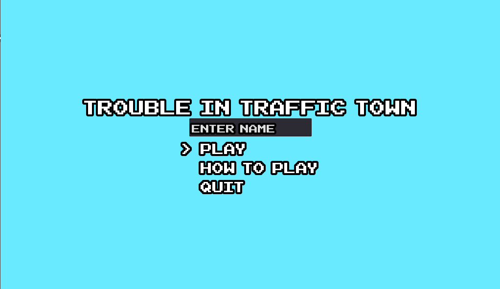
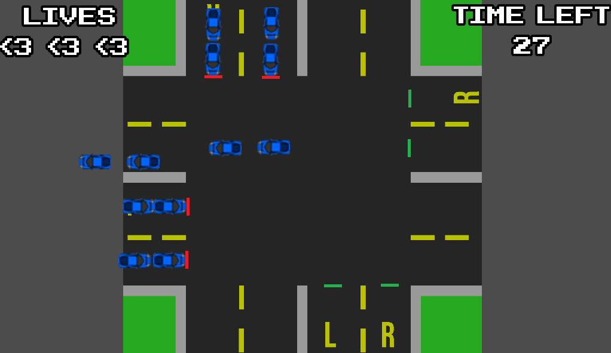
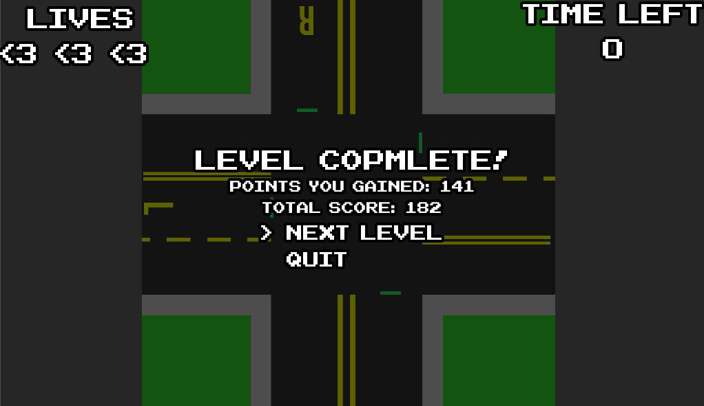

About Me
I am a Computer Science student at Georgia Tech, I am in the Devices and Systems Architecture threads. I'm most interested in, and looking to pursue a career in operating systems, game design, and industrial automation. I enjoy working on personal projects to expore this ambition in my free time with school and work. I love the city of Atlanta and never plan to move away.
Personal Project Portfolio
GT Junior Design: Redox OS Service Monitor
For my CS junior design project my team and I created a simple service monitor for Redox OS. Redox is a new microkernel operating system written in Rust. I learned Rust for this project and thoroughly enjoyed learning the new system to try and build out some important features. With some guidance from our proffessors and the Redox community we created a nice proof of concept with a CLI and GUI in libcosmic. Watch the video below if you'd like to know more.
GT Simulator 2024
This is a simulation of being a gatech student for the GBA. I made for CS2110 Spring 2024 with Mr. Mark Moss. The game was written in C and the graphics where made in GIMP. It is a simple game where you try to doge the same hazards that GT students have to on a day to day in current year. The ROM can be downloaded here.
It even runs on real hardware!
Keyboard Only Driving Simulator
Have you ever wanted to relive learning to drive stick? Me neither, but I wanted to try building a driving sim specifically designed to be played with a keyboard in the Godot engine. I thought it would be a good idea to use Vim's right hand key bindings to move the shifter. I was able to get a prototype working (video below) but the controls can be difficult and I spent a lot of time tweaking the gearing system to no avail. The "drivetrain" code would likely need a complete overhaul which I may come back to but I have other ideas from this project I want to revisit first. You can find the Godot project on github here.
GT Custom 3D Printed Keycap
I don't use Windows and got sick of the "win" key on the keyboard I made, so I used OpenSCAD to make a better keycap to match my keyboard's Ramblin Wreck theme. Micro center had a very nice gold 3d printer filament which worked perfectly! More info and models in the github repo here .
Home MARTA Arrival Time Board
I made this so that my roomates and I can see at a glance when the next trains will be arriving at our nearest marta station, It is meant to be run on a Raspberry pi by our apartment door. You can view the project here.
Auto Tier Violation
I made this GUI program to automatically "Tier Violate" or "Write Up" Lifeguards for not showing up for manditory training. Names have been removed from test CSV for privacy. Typing 80+ names and everything into that google form was taking too long, this gets it done in 5 minutes instead of an hour and a half. My own custom google form is included for testing if you would like, I put in my own to again protect the privacy of X company and it's employees. You can see the project here.

GPS
I made a short beat tape for fun, availible on all streaming platforms. You can listen here.

High School Projects
Trouble In Traffic Town
In my senior year of high school my partner Kunal and I entered this game to the video game and simulation design competition for FBLA (Future Business Leaders of America). I started on the game in the fall of 2020 and Kunal joined me by the end of the year. We finished in early 2021 and won 3rd place in Georgia. The Godot project and a working release build can be found on my github .
- 
- 
- 
cSTEM/RISE
In the cSTEM program at collins hill I have completed many projects ranging from robotics to biofeul as well as makinng video games and film projects. In my free time also do photography.

The Engineering Design Process
In the cSTEM program we are supposed to use the Engineering Design Process(EDP) for everything. The engineering design process is broken up into the 5 steps, investigate, plan, design, create, and evaluate.
-
Investigate
- To observe or inquire into in detail; examine systematically. -
Plan
- A proposed or intended course of action. -
Design
- To conceive or fashion in the mind; invent. -
Create
- To give rise to; produce. -
Evaluate
- To determine the importance, effectiveness, or worth of; asses.
Think Global Act Local
First semester of the 2018-2019 year we started the "Think Global Act Local" project where we had to come up with an innovation that would solve a problem in our community. Me and my good friends Scarlett Ramu and Erick Lopez teamed up to create a single computer that would power two separate windows computers. Our project went really well and at both of the innovation expos we had many teachers, students, and parents who were interested in our prototype and its potential applications.
The Most Dangerous Game
At the beginning of 2018 my fellow freshman and I started a project based on the VEX robotics system, and it revolved around evolution which is what we where learning in biology at the time. The idea was that we would all build the same robot and then compete with them. after the competitions we would add upgrades and switch up the design to adapt to the environment and our competitors but we would not know what changes that the teachers would make to the arena. My group made a robot we called "BloodBot9000", below is a video I put together of the robot.
Chem-E-Car
Investigation
To start off this project we had to come up with 3 possible reactions to power our car. I chose calcium carbonate and hydrochloric acid and vinegar + baking soda as a backup, but i really really wanted to do a DIY battery made from coke, copper and zinc. I really wanted to do the coke battery to experiment with electrolysis because the chemistry of batteries and how they worked really interested me and so we ruled out the other two unless we really had to do them. These reactions and the battery especially raised a few questions. How much voltage/current can this battery produce? What kind of motors are we using and can they produce enough torque to propel whatever chassis we use? What should we make the chassis out of? How big should the wheels be? Will we have to use gears to transfer the energy from the motors to the axles? Does it have to be aerodynamic?
Planning
To follow up with these questions I did some research on the mechanics of car/vehicle design. I found that aerodynamics could drastically improve our speed and efficiency but in the long run we did not have time to implement an aerodynamic shell like we brainstormed. Another thing that ended up applying much more than I thought would was an article about re-assembling a vintage car, in the article they discussed some of the sourcing for the parts and how hard it was. When we were trying to get parts like bearings we couldn't because we thought that the school would be able to provide us with supplies but a lot of the stuff we needed, like bearings, was out of stock.
Design, Create, & Evaluate
Here is sketch idea that I had for our Chem-E-car. The circles on the chassis are where the cells of my battery are and you can see some of the measurements and markings that me and my group put together so that it would be easier for us to make a 3d model of it. We used this design because it could hold up to 5 cells if necessary and could fit the motors, wheels and axles without any trouble.

This is the inventor drawing for the first prototype that my group came up with, as you can see it greatly resembles the paper sketch that we did.
Here is the second design that me and my group created. At this point we realized that our super cool coke battery wasn't producing any current and we had to scrap it so we strapped some AA batteries on and stripped away a large amount of the chassis as well as changing the material to plastic.

Here is a car design that Joseph and I collaborated on after school as a little experiment, it is very simple with some AA batteries and a propeller but it managed to go all the way down A hall with no hitches so I'd call it a success. We did this because both of us created batteries that produced a voltage but had too high of a resistance for the current to flow.
Lord Of The Flies
After finnishing "The Lord Of The Flies" by William Golding we were tasked with creating a biofuel made with materials you could find on the island in lord of the flies and then a short flim that incorporated the biofuel.
Catapult Project
Investigate 10/10/19
Our Challenge was that we had to build a device to launch a small foam footballs at least 2 meters consistently, it had to fit in a 50x50cm cube, and we couldn't use kits or pneumatic launching or a slingshot and it had to have a launching arm which limited us to making a catapult or some variation of a catapult, like a trebuchet. We started our investigation with a mind map sort of thing where we wrote out ideas to solve the problem of getting a small football across the room. We would also have to complete tables and graphs that described our vertical and horizontal velocity, acceleration, and position. Scroll down for the related graph and tables
Plan 10/10/19

Once we found out it had to have a fulcrum arm we decided we'd try to get around this by putting a football launcher that uses vex wheels at the end of the arm however we quickly realized that the fact we were placed in a group where neither of us had the cSTEM advisement and we both had busy schedules that disallowed us from working on the catapult after school. So we decided to go for a pretty basic, bare bones setup that we could feasibly create with the little time we had. This would also make our math a little bit easier to do as we could very easily measure our theta and initial height.
Design 10/10/19

Since neither of us had the cSTEM advisement we had little time to build let alone design the catapult. however when we did have a chance to design we drew out something that we thought would work well and we could complete in a reasonable amount of time. The drawing is very basic, it only has the launching arm, a base, and some rubber bands to power it.

Create 10/12/19
The creation of our first prototype was relatively quick and easy reflecting the basic design we created. You might initially think this as a relatively bad thing but it was exactly what we needed due to our extreme time constraint. We were able to finish our first prototype in about an hour after school in the engineering room.below is one of the videos of what we made that day
Evaluate - Test 10/18/19 & 10/24/19
Our first test went horrible to be frank, our rubber bands didn't have enough tension to actually pull the launching arm around the fulcrum to launch the ball so we took turns powering the catapult. Not only did our design barley work at all, it was extremely inconsistent but we averaged about 1.4 seconds in the air and about a 2.7 meter range. but the minimum distance we got was .3 meters and the max was 6 so we really needed to fix some things.


Final Product
Our final product was much better despite only having a range of about a meter. The final product was much more consistent and we were able to more accurately calculate where the football would be at any given point. below is a video of our final product.